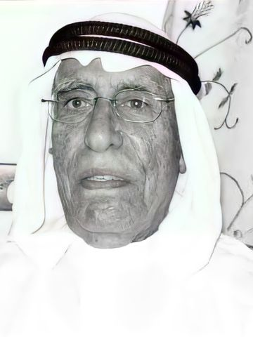

Sager Abdulwahab Al-Qatami
1929 to 2022
Life in brief
Nakhuda Sager bin Abdulwahab Al-Qatami was born in 1929 in Fereej Al-Mutabba in Sharq and went to sea at fourteen. He told the family's sea story to the newspapers and to the Landmarks of Old Kuwait Town, and wrote Dalil Al-Bahr, a guide for fishermen whose proceeds went to the Kuwait Society for the Handicapped. He died in November 2022, aged 93.
Life facts
- Born
- 1929, Fereej Al-Mutabba in Sharq, in his own words (Al-Qabas, 2009), Kuwait
- Died
- November 2022, aged 93 (Al-Jarida death notices, 12 November 2022), Kuwait
- Sea
- Called «the last of the Al-Qatami nakhudas» by the researcher Fahd Ghazi Al-Abduljalil (5 October 2016)
- Works
- Author of Dalil Al-Bahr li-Huwat Al-Sayd wal-Tanazzuh, a short guide to fishing and boating in Kuwaiti waters; the article calls him one of the contemporary Kuwaiti nakhudas (Khalid Salem Mohammed, Al-Musannafat Al-Milahiya, Al-Bayan, p. 66), Kuwait
Family
- Father
- Abdulwahab Abdulaziz Al-Qatami
- Mother
- Mariam Khalifa Al-Ghanim
- Spouse
- Amna Mohammed Al-Qatami
- Children
- Mohammed Sager Al-Qatami, Abdulaziz Sager Al-Qatami, Fawzi Sager Al-Qatami